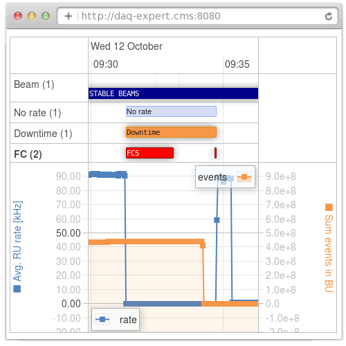

Introduction to DAQExpert framework
Why introduce the framework?
We have introduced the framework so that it's easy to extend DE knowledge. We used Java as a language so that:
- Experts may represent their knowledge without learning new rule-based language

What's DAQ Expert framework?
Elementary part of expert knowledge is Logic Module (abbreviated LM) is a piece of knowledge focusing on one aspect. E.g.:
- LHC state LM - identifies stetes of LHC
- NoRate LM - identifies when there is no rate in DAQ system
- Downtime LM - indicates downtime in CMS DAQ
- FED backpressured LM a.k.a FC5 - identifies failure case
Note that each Logic Module should focus on one aspect, and one aspect only. Results of a Logic Modules can be used in other Logic Modules so that there is no duplication of code. It is recommended to reuse results from Logic Modules for better performance.